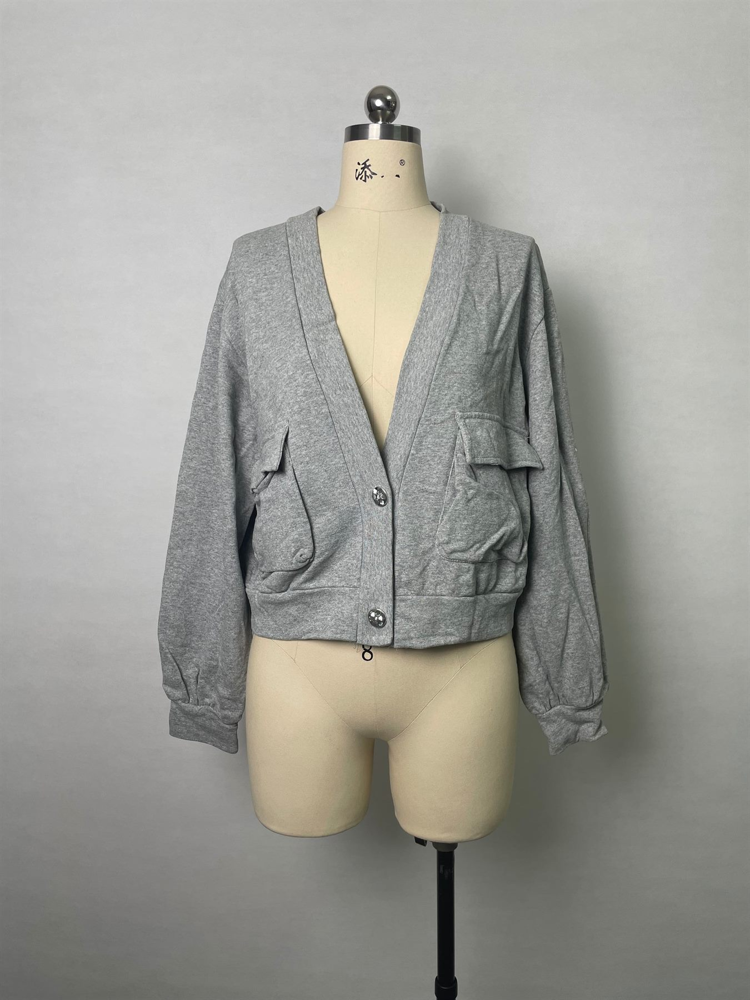

01 Production
Woven and Knit Factory Coordination
Support for dresses, tops, shirts, pants, jackets, outerwear, knit tops, cardigans and sweater programs with clear sample-to-bulk communication.
Women Top Production
Cyncho helps global fashion brands with women top manufacturer in china projects from development and sampling to fabric sourcing, bulk production and quality communication.
Get Free Quote
As a B2B apparel manufacturing partner, Cyncho combines product development, sample coordination, fabric and trim sourcing, production communication and quality review. The goal is to help buyers turn design direction into production-ready women tops with fewer surprises and clearer supplier expectations.
Our team can work from tech packs, sketches, samples or reference images for camis, blouses, fashion tops, woven tops and casual tops. We help clarify fabric direction, fit, trims, labels, packaging and delivery planning before moving into bulk apparel production.
Women top manufacturing often depends on neckline finish, armhole fit, drape, print placement, placket construction and fabric transparency control. Cyncho can support women top sampling for private label collections, capsule launches and wholesale programs.
This page is also relevant for buyers searching for a women top factory, women shirt factory or top supplier in China. Cotton stripe tops, seasonal fashion tops and daily basics can all require different pattern, trim and packaging decisions.
Turn top ideas, reference samples or tech packs into clear manufacturing requirements.
Develop and revise women top samples before bulk production so fit, drape and workmanship can be checked.
Coordinate labels, trims, quality checkpoints, export packaging and shipment communication.
This page is suitable for fashion startups, private label brands, wholesalers, retailers and distributors comparing women top manufacturers in China.
Target markets include the United States, United Kingdom, Europe and Australia. Cyncho supports B2B buyers looking for a women top supplier with long-term production planning and practical communication.
Compare related services and product pages before sending your inquiry: women shirt manufacturer, women blouse manufacturer, organic cotton clothing manufacturer, silk clothing manufacturer and private label clothing manufacturer. If you need broader factory support, review clothing manufacturer china, fabric sourcing, factory and quality control. For range planning, review capsule wardrobe collection development.
Yes. Cyncho supports women top manufacturer in china projects for overseas buyers with development, sampling, sourcing and production support.
Cyncho can review woven tops, casual tops, fashion tops, cotton stripe tops, private label tops and seasonal women top collections depending on fabric and construction requirements.
Yes. Cyncho works with brand owners, wholesalers, retailers and distributors that need a women top factory in China for sampling and bulk production.
Factory Capability
Cyncho combines woven garment manufacturing, knitwear resources, sampling coordination, fabric sourcing and quality control so overseas brands can evaluate one practical clothing factory partner before starting bulk production.
Support for dresses, tops, shirts, pants, jackets, outerwear, knit tops, cardigans and sweater programs with clear sample-to-bulk communication.

From tech pack review to pre-production comments and inspection communication, our team helps buyers reduce surprises before shipping.

Private label and OEM projects can include fabric search, accessory sourcing, label development, hangtags, packaging and market-ready finishing details.
Cyncho is a clothing manufacturer, garment manufacturer and apparel manufacturer in China founded in 2010. We own a woven womenswear factory and also work closely with an invested knitwear and sweater factory, which allows our team to support both woven clothing and knitted garment programs. For buyers comparing a clothing factory, reliable garment factory, wholesale clothing manufacturer or custom clothing manufacturer China partner, our value is not only sewing capacity. We help brands translate a product idea into custom clothing production that can be sampled, checked, improved and delivered with clearer communication.
Our factory background is especially relevant for women tops, shirts, blouses, pants, dresses, jackets, outerwear, knit tops, knitted pants, cardigans and pullover sweaters. We support OEM clothing manufacturer projects when a buyer already has tech packs, ODM clothing manufacturer projects when development support is needed, and private label clothing manufacturer projects when labels, trims, hangtags and packaging must match the brand identity. Many startup clothing manufacturer and small quantity clothing manufacturer inquiries need extra guidance at the beginning, so we help review fabric direction, MOQ, sample expectations and the best next step before bulk production starts.
Quality first is a core part of how we work. The process can include fabric search, trim and accessory sourcing, sample development, fit comments, pre-production confirmation, production follow-up, inspection communication and after-sales support. Buyers from Australia, New Zealand, the United States, the United Kingdom and Germany often need a fashion clothing supplier that understands market expectations, size comments, fabric hand feel, workmanship and delivery pressure. Cyncho has worked with more than 150 clients and continues to focus on long-term cooperation with independent womenswear brands, wholesalers, distributors and retailers.
If you are searching for the best clothing manufacturer China option, a low MOQ clothing factory, a clothing manufacturer near me result that can actually support overseas production, or a partner for women top manufacturer in china, please send product category, target quantity, size range, fabric preference, reference photos, tech pack if available, label requirements and target market. Clear inquiry information helps us reply with realistic sampling suggestions, MOQ discussion and production timing instead of a generic answer.
Share category, style references, size range, target fabric, colors, trims and packaging. This helps our clothing factory review construction, sourcing and sample feasibility.
Tell us your expected order quantity and launch plan. Low MOQ clothing factory options depend on fabric availability, garment complexity, color count and production schedule.
Let us know whether you sell to Australia, New Zealand, the US, UK, Germany or another market so we can discuss fit comments, quality expectations and export communication.
Ready to discuss production? Visit Contact Cyncho to request a factory quote, or compare related services such as OEM clothing manufacturing, ODM clothing manufacturing, private label clothing manufacturing and custom garment manufacturing.
Send your women top details, quantity, fabric needs and target market. Cyncho will help review sampling, sourcing and production options.
Contact Manufacturer